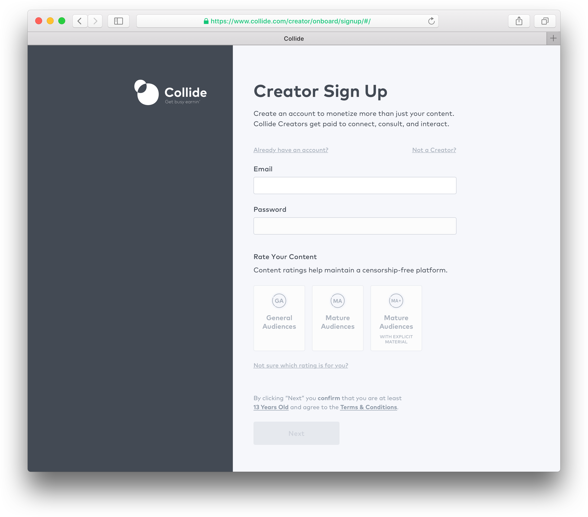

Collide - Creator Onboarding
Increase the rate of successful creator sign ups
Case study
Problem statement
The number of successful creators were too low when compared to overall number of sign ups. Metrics showed most Creators dropped off early in the onboarding process. Specifically before we were able to acquire meaningful information from them.
Hypothesis
After sufficient research, we concluded that our onboarding process was too confusing for users. We focused on three pain points we wanted to improve:
- Shorten the onboarding process - Our 12-step onboarding is extensive because we wanted Creators to complete their full profile before proceeding to create content.
- The 3rd screen displayed a false sense of completion - I provided several checkpoint drop-offs for Creators to skip parts of the onboarding and go directly to their dashboard. The mistake here was assuming Creators were knowledgable enough to finish the rest of the steps.
- Creators were confused on what to do after completing onboarding - We held several in-house testings where users were invited into the office and create a Creator account. We noticed several things; some users were mindlessly inputting information into the fields, users were also confused about what to do once they landed into their dashboard (similar to problem 2).
Proposed solution
We reorganized the information architecture of onboarding and request information at more appropriate times.
- We shortened the onboarding process to 3 screens - We are only serving them required basic informations needed to create a profile. This would greatly help with fatigue.
- We implemented the "Launch Checklist" - A list of to-do items that are recommended to the Creator. All items displayed are critical to the user's potential to become successful.

We wanted this process to be as quick and simple as possible, while still meeting critical requirements. We only ask for information that is required for users to create an account on Collide. By doing so, we reduced the onboarding process down from 13 screens to 3.
Once the user has completed the Account creation process, they are then directed to their dashboard. Users can choose to explore as they please or choose to click on the Launch checklist prompt.
The launch checklist acts as a to-do list for confused users. It was not implemented with the intent of forcing every user to use it.
Reflections and future plans
We're confident these changes will improve the onboarding experience for new users. The revamped Creator sign up and the addition of a launch checklist will help negate user exhaustion.